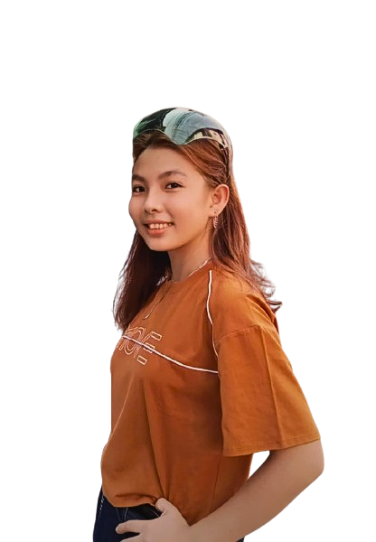
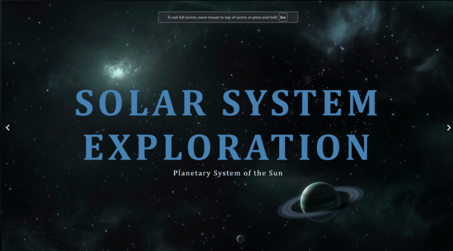
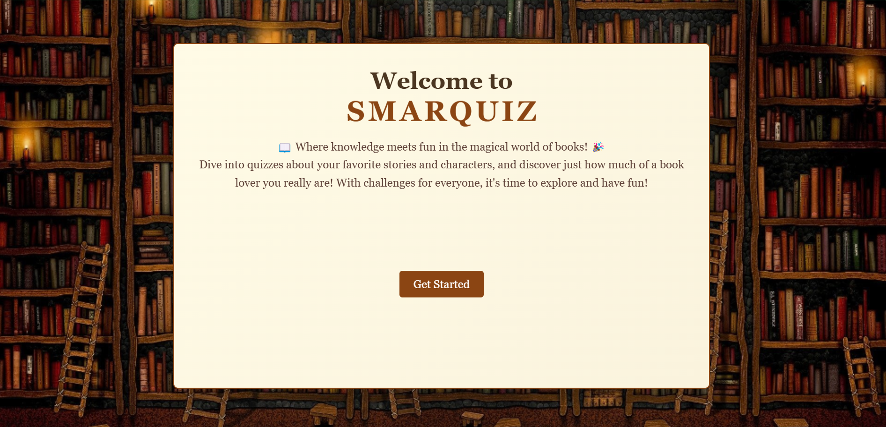
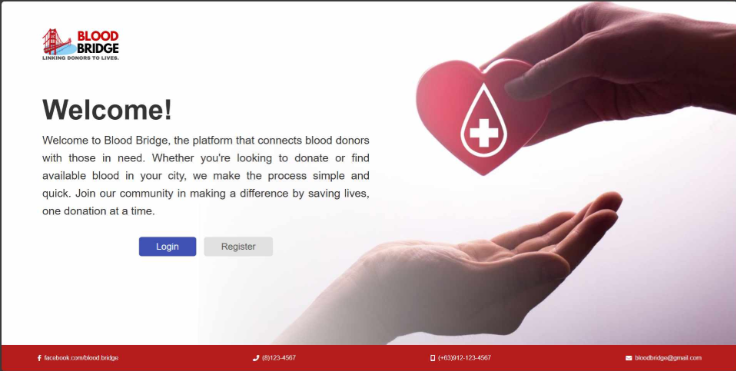

I am a third-year Information Technology student with a passion for using technology to solve problems.
My studies have given me a solid foundation in programming and web development.
I'm eager to learn and apply my skills in real-world projects.
About Me
I am a third-year college student taking a Bachelor of Science in Information and Technology at
City of Malabon University. I live with my unrelated blood, aunt at Tondo, Manila.
Project
I have created various systems, especially websites, with the help of AI. Thankfully, I'm able to
create something incredible with our own hard work.
Skills & Services
With my knowledge and experience over the years of study, I can create interesting web pages
and perform routing skills, among other things.

About Me
As a third-year college student, I am eager to learn and grow in my field. Despite having less experience compared to seasoned professionals, I am passionate about acquiring knowledge in technology, design, and web platforms. My journey so far has given me a solid foundation, and I am dedicated to helping businesses harness their potential through innovative solutions.
Currently, I work as a freelance designer and Webflow developer, where I also embrace the role of a tech generalist, assisting businesses in optimizing their use of technology and systems.
Through my diverse experiences, I have had the chance to work with various platforms, applications, and tools, allowing me to develop a broad skill set that I continuously strive to enhance.
Projects
Here is a showcase of my work, including web development, design, and more!

Solar System

Online Quiz

Blood Donation
Skills & Services
I specialize in web development, creating responsive designs, and utilizing AI tools to enhance efficiency.
My skills include programming, graphic design, and teamwork, which I constantly refine to deliver the best results.